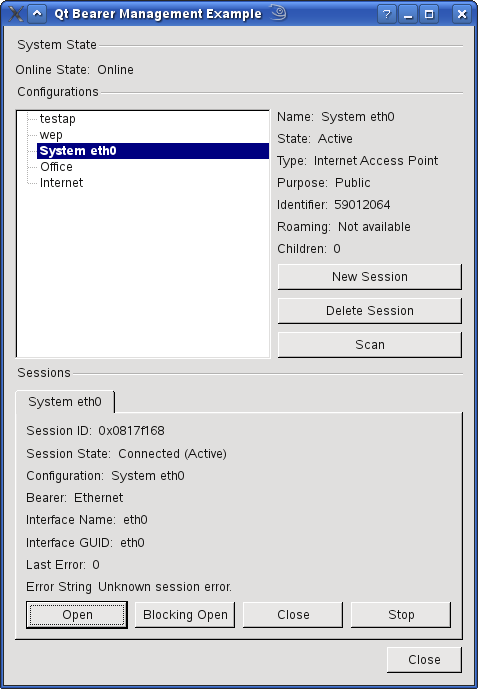

Home
·
All Classes
·
All Functions
·
Bearer Monitor Example
Files:
bearermonitor/bearermonitor.cpp
bearermonitor/bearermonitor.h
bearermonitor/sessionwidget.cpp
bearermonitor/sessionwidget.h
bearermonitor/main.cpp
bearermonitor/bearermonitor.pro
The Bearer Monitor example shows how to use the Bearer Management API.

Copyright © 2010 Nokia Corporation and/or its subsidiary(-ies)
Trademarks
Qt Mobility Project 1.1.0